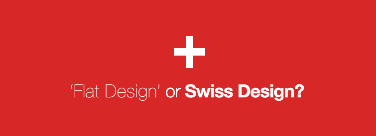
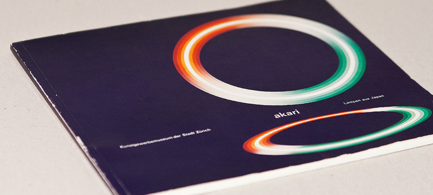

Articles

‘Flat Design’ or Swiss Design?
There’s been a lot of discussion lately on ‘Flat Design’ out in the design world, particularly among desktop and mobile UI designers. I’m excited that the ideal seems to be shifting from 3 dimensional design for the screen to a more utilitarian approach like the old mid twentieth century Swiss print designs. After all, this style has been my biggest inspiration.
It's all about simplicity now on the web, as it was in the 50's & 60's in print design. Swiss print design dominated the scene, and was characterized by the basic design fundamentals: using color, typography, space and simplification to communicate a message. It's hardly ever referenced when people talk about 'Flat Design'. I’m not sure why, but if you take a look at some old Swiss Design and compared it with what people are doing today in UI design, you will see the correlation. It has taken us time to transfer over these fundamentals to digital products and the web, but the old print design ideals seem to be emerging.
I started my interactive design career at a Swedish Travel Company that was heavily influenced by Swiss Design. I remember traveling for photo shoots for the company and marveling at the minimalistic design that Lufthansa, Air Italia and other European airlines used. I immediately fell in love with this style. I kept all my boarding passes and hoarded as many brochures as I could.
My department worked closely with the print department that published 4-5 enormous catalogs a year. All the style from the print catalogs transferred to the work we did on the web. They used Helvetica Neue for typography, each section was marked with bright color and guided the reader with a serious icon system. We used logos designed by Paul Rand (what a treat). At the time, we had to create most of the typography as graphics which we spent a lot of our days doing. The colors never seemed to match up, and the space on the screen was hindering. Back then we were using a 256 color palette, which limited some of our better color schemes and a seven font typography setup shared between windows machines and macs. The monitors we were designing for were 600x800 in resolution and it was very constraining. The technical restrictions associated with how things transferred to the web from print were frustrating not only to us, but to a lot to the art directors who spent long hours crafting these amazing color schemes and typography sets.
Does this 'Metro' style look familiar? We came up with this creative concept for a screensaver in 2002, it is heavily influenced by Swiss Design.
Fast forward to today and now we have monitors and screens that can accept just about any color, a canvas that can be as large as a full wall and as small as an iPhone screen. The real kicker is that we finally have typography on the Web!!!!!!! Look at all these sans serif fonts. The future of design on the web really is full of possibility and promise.
Could it be that the web world has finally caught up with the print world, or is it the other way around? Does the term "flat" really do it any justice? I don’t think so. I'd like to pay homage to the print designers of the past and give due credit to my most influential Swiss Design style that has made me who I am in the design world. It seems what we were trying to accomplish on the web in my earliest days in the industry has finally come to fruition. Advancement in technology has made it possible. 'Flat Design' is anything but flat, but rather interwoven with history and rich with culture.
© 2017 Chris Gillis Design All Rights Reserved.